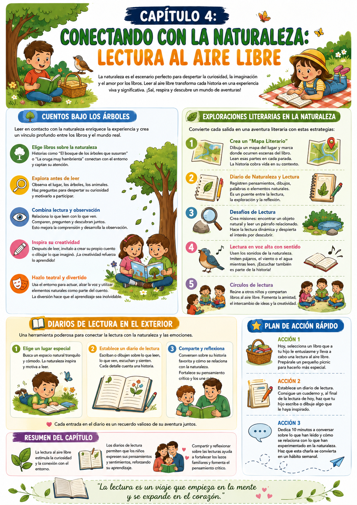

¿Recordás la última vez que leíste un libro bajo la sombra de un árbol? Esa sensación de libertad y conexión con el entorno es algo que podemos ofrecerle a nuestros hijos. La naturaleza no solo actúa como telón de fondo — se convierte en un aliado poderoso en el aprendizaje.
La lectura al aire libre es una forma de integrar el mundo natural en el aprendizaje. Al acercar los cuentos y las historias a la naturaleza, creamos un vínculo más profundo entre lo que leen y lo que experimentan.
Cuentos bajo los árboles
Leer en contacto con la naturaleza, conectar lo que dice el libro con lo que ven a su alrededor.
Exploraciones literarias
Mapa literario del entorno, desafíos de lectura en distintos puntos, diario de naturaleza y lectura.
Diario al aire libre
Registrar las experiencias de lectura en la naturaleza — lo que ven, lo que sienten, lo que aprenden.
Por qué la naturaleza potencia la lectura
El aire libre mejora la atención y reduce el estrés — dos condiciones ideales para el aprendizaje. Un chico relajado y estimulado sensorialmente absorbe mucho más que uno sentado en una silla bajo luz artificial.
✅ Antes de arrancar

Tuki te dice:
La lectura al aire libre no es solo un cambio de escenario — es una forma de integrar el mundo natural en el aprendizaje. Cada árbol, cada hoja, puede ser un nuevo capítulo por descubrir.
Para entender por qué la lectura al aire libre funciona tan bien, veamos qué pasa cuando combinamos la experiencia sensorial de la naturaleza con la lectura.
El entorno natural como contexto de aprendizaje
Atención · Sensorialidad · Conexión
La naturaleza reduce el estrés y mejora la concentración — dos condiciones ideales para el aprendizaje. Cuando combinamos eso con la lectura, el resultado es una experiencia de aprendizaje mucho más profunda que la del aula convencional.
Además, la lectura al aire libre crea asociaciones sensoriales únicas. El olor del pasto, el sonido del viento, la textura de la tierra — todo eso queda ligado al recuerdo de la historia que leyeron. Y esos recuerdos multisensoriales son los más duraderos.
La observación como extensión de la lectura
Mientras leen sobre un árbol en el libro, pueden observar el árbol real frente a ellos. ¿Cómo se parecen? ¿Qué diferencias ven? Ese diálogo entre el texto y la realidad es comprensión lectora en acción.
El diario de lectura al aire libre
Observación + escritura + reflexión
Un diario donde el chico registra sus experiencias de lectura al aire libre crea un puente entre la naturaleza y las palabras. No es solo un cuaderno — es un registro de cómo el mundo exterior se conecta con el mundo de los libros.
- 1Que anote qué libro leyó, dónde estaban y qué observó a su alrededor durante la lectura.
- 2Que dibuje algo que haya visto — un animal, una planta, el paisaje — y lo conecte con algo de la historia.
- 3Que escriba una frase sobre cómo se sintió leyendo en ese lugar. Eso desarrolla la conciencia emocional y la expresión escrita al mismo tiempo.
Tuki te dice:
La naturaleza es el aula más grande y más estimulante que existe. Y no cobra entrada.
Tres estrategias para llevar la lectura al aire libre — cuentos bajo los árboles, exploraciones literarias y círculos de lectura al aire libre.
Cuentos bajo los árboles
Lectura + observación + conversación
Elegí un lugar al aire libre — un parque, el jardín, la sombra de un árbol en la vereda. Creá una pequeña ceremonia de lectura en ese espacio.
- 1Elegí libros relacionados con la naturaleza: sobre animales, plantas, el cielo, el agua. La conexión entre el texto y el entorno es inmediata y poderosa.
- 2Exploración previa: antes de leer, recorran el lugar juntos. Preguntá qué ven, qué escuchan, qué animales podrían estar escondidos. Esa curiosidad activa la atención para la lectura.
- 3Lectura + observación simultánea: cuando el libro mencione algo que pueden ver en el entorno, detenete y observenlo. "El libro dice que los árboles tienen raíces profundas — ¿podés imaginar las raíces de este árbol?"
- 4Creación post-lectura: que invente su propio cuento inspirado en lo que vio. Un cuaderno y lápices de colores son suficientes.
Exploraciones literarias en la naturaleza
Mapa literario · Desafíos · Diario
Convertir una caminata en una exploración literaria donde cada parada tiene una lectura y un desafío.
- 1Mapa literario: antes de salir, dibujen un mapa simple del área que van a explorar. Marcá puntos específicos donde van a leer fragmentos del libro relacionados con lo que van a ver.
- 2Diario de naturaleza y lectura: llevá un cuaderno donde el chico anote y dibuje lo que observa — hojas, piedras, insectos — y lo conecte con lo que están leyendo.
- 3Desafíos de lectura: creá misiones — "encontrá una piedra y leé el párrafo sobre rocas", "encontrá un insecto y leé lo que dice el libro sobre él".
- 4Lectura en voz alta con sentido: usá el entorno para enriquecer la lectura — si hay pájaros, que lea con la voz del pájaro. Si hay viento, que lea más lento. El contexto natural hace que la lectura sea más expresiva.
Círculos de lectura al aire libre
Social · Compartido · Memorable
Si hay otros chicos cerca — hermanos, amigos, primos — organizá una sesión de lectura al aire libre en grupo. La lectura como actividad social en la naturaleza crea recuerdos muy poderosos.
- 1Cada chico trae un libro que le guste y lo comparte brevemente con el grupo.
- 2Leen en voz alta por turnos — fragmentos cortos, con expresión.
- 3Después de cada lectura, espacio breve para que los demás comenten o hagan preguntas.
- 4Cerrá con una actividad — dibujar algo de lo que escucharon, inventar el final alternativo de una historia, o simplemente charlar sobre cuál les gustó más.
Por qué funciona
La combinación de naturaleza + grupo + lectura es una de las experiencias más positivas que podés crear alrededor de los libros. Y las experiencias positivas son lo que construye el amor duradero por la lectura.
Tuki te dice:
Sé constante y disfrutá el proceso. La lectura al aire libre no es una técnica — es una experiencia. Y las experiencias se repiten cuando son buenas.
Tres acciones concretas para arrancar esta semana — la primera sesión al aire libre, el diario de naturaleza y la exploración literaria.
Acción 1 — Primera sesión de lectura al aire libre
Elegí un libro que le entusiasme y llevá a cabo una lectura al aire libre. Preparale un pequeño picnic para hacerlo especial. Leán juntos 10-15 minutos y después conversen sobre lo que vieron a su alrededor mientras leían.
Acción 2 — Creá el diario de lectura al aire libre
Conseguí un cuaderno que sea "el diario de aventuras lectoras". Después de cada sesión al aire libre, que escriba o dibuje: qué libro leyeron, dónde estaban, qué observó y cómo se sintió. Revisálo juntos cada mes.
Acción 3 — Exploración literaria con mapa
Planificá una caminata corta. Antes de salir, dibujen juntos el mapa del recorrido y marcá 3 paradas donde van a leer. En cada parada, leén un fragmento relacionado con lo que ven. Al volver, que dibuje su parada favorita en el diario.
- 1Ver la naturaleza como distracción: los pájaros, los insectos, el viento — todo eso puede ser parte de la lectura, no un obstáculo. Integrá el entorno en lugar de ignorarlo.
- 2Leer demasiado tiempo: al aire libre, 15-20 minutos de lectura activa es suficiente. Mejor terminar con ganas de más que cuando ya está cansado.
- 3No preparar el material: elegí el libro antes de salir y verificá que sea adecuado para el entorno. Llegar sin material preparado corta el entusiasmo.
- 4Olvidar el diario: la reflexión post-lectura es lo que consolida el aprendizaje. Sin el diario, la experiencia queda incompleta.
- 5Hacerlo solo una vez: la primera sesión siempre es un poco rara. La segunda ya tiene ritual. Que sea una práctica semanal o quincenal, no un evento aislado.
Tuki te dice:
¡Felicitaciones! 🎉 Completaste el Bono 3 y toda la guía Leer con Ganas. Ahora tenés todas las herramientas para transformar la lectura en una aventura — adentro y afuera de casa, con emociones y con movimiento, con familia y en soledad. ¡A leer!
Esta infografía resume las estrategias de lectura al aire libre — el cierre perfecto de todo el viaje de Leer con Ganas.

Infografía · Bono 3 Cap 4 — Lectura al Aire Libre
Tuki te dice:
¡Lo lograste! Completaste toda la guía Leer con Ganas. Ahora revisá el Kit de Actividades para seguir profundizando el viaje lector.